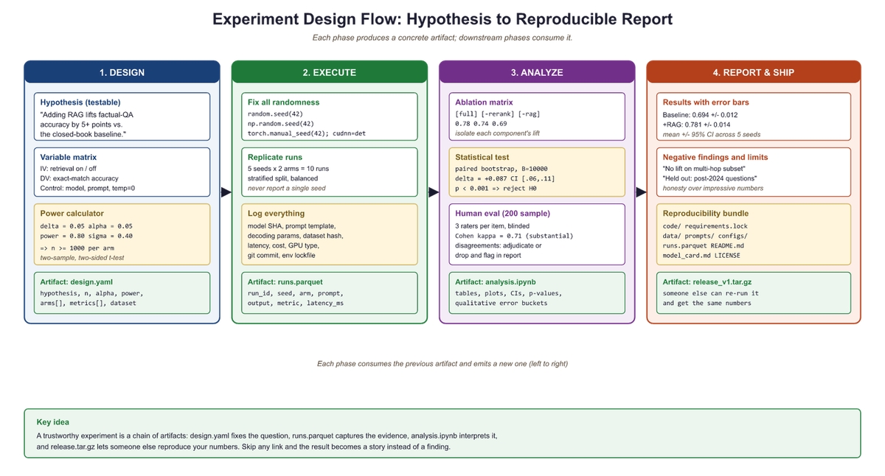

"An experiment you cannot reproduce is an anecdote you cannot trust."
Eval, Reproducibly Paranoid AI Agent
Rigorous methodology separates LLM science from LLM folklore. The rapid pace of large language model research has produced thousands of papers with evaluation claims that vary enormously in rigor. Some report single-run results on leaked benchmarks with no confidence intervals; others follow careful experimental protocols with ablations, statistical tests, and human evaluation. This section provides a comprehensive methodology guide for designing, executing, and reporting LLM experiments. It covers experiment design, reproducibility challenges, evaluation protocol construction, ablation studies, human evaluation methodology, artifact packaging, statistical reporting, and the most common pitfalls that undermine published results. Whether you are writing your first LLM paper or reviewing submissions for a top venue, this section will help you distinguish credible findings from noise.
Prerequisites
Before starting, make sure you are familiar with evaluation metrics from Section 42.1: LLM Evaluation Fundamentals, reproducibility practices from Section 42.7: LLM Experiment Reproducibility, and evaluation harness ecosystems from Section 42.1: Evaluation Harness Ecosystems.
44.11.1 Experiment Design for LLM Research
For tasks without a verifiable answer (creative writing, summarisation, dialogue), the standard 2024-26 evaluation is pairwise win-rate from an LLM judge. Win-rate has appealing properties (sample-efficient, captures preferences over absolute scales) but also rewards the model whose style the judge prefers, independent of substance. The open question is when win-rate diverges from absolute quality. Empirical evidence: judges trained on human preferences tend to over-weight length, structure, and confident phrasing. Mixing win-rate with absolute Likert scores from the same judge reduces but does not eliminate the bias. The reference debate (Zheng et al. MT-bench follow-ups) is still active.
Modern production systems chain together retrieval, prompting, structured-output enforcement, a primary LLM call, often a critique pass, and post-processing. Standard ablation methodology (remove one component, measure metric delta) assumes additive contributions. In practice the components interact: a stronger retriever can reduce end-to-end accuracy if the primary prompt does not handle the new context format. The open methodological question is how to design and report ablations in compound systems so that contributions are attributable without exponential combinations. Shapley values over components are theoretically right but rarely feasible. A community-agreed practical standard is still missing.
Before running evaluations, use power analysis to determine the required sample size. For binary accuracy (correct / wrong per example):
For detecting a 5-percentage-point difference (δ = 0.05) between two systems each at ~70% accuracy, with α = 0.05 (significance) and 80% power, you need approximately 1,500 examples per system. Evaluating on 100 examples cannot reliably detect differences smaller than 15 percentage points. Underpowered studies are the single most common cause of inflated benchmark claims in LLM research, they catch noise as if it were signal.
LLM experiments differ from classical machine learning experiments in several important ways. Models are expensive to run, outputs are stochastic even at low temperatures, API-based models change without notice, and the combinatorial space of prompts and hyperparameters is vast. Designing experiments that yield trustworthy conclusions under these constraints requires careful attention to randomness control, statistical power, and ablation structure.

statistical tests, human evaluation), and Reporting (results with error bars, artifact package with code, data, and configs)44.11.1.1 Controlling for Randomness
Stochasticity in LLM experiments arises from multiple sources: sampling temperature, dropout during training, data shuffling, and even nondeterministic GPU operations. Controlling these sources is the first step toward reproducible results. Code Fragment 44.11.2 demonstrates how to set reproducible seeds across the major frameworks.
import os
import random
import numpy as np
import torch
def set_global_seed(seed: int = 42) -> None:
"""Set seeds across all sources of randomness for reproducibility."""
random.seed(seed)
np.random.seed(seed)
torch.manual_seed(seed)
torch.cuda.manual_seed_all(seed)
os.environ["PYTHONHASHSEED"] = str(seed)
# For maximum determinism on CUDA (may reduce performance)
torch.backends.cudnn.deterministic = True
torch.backends.cudnn.benchmark = False
set_global_seed(42)
# For API-based models, control randomness via generation parameters
def deterministic_api_call(client, prompt: str, model: str) -> str:
"""Make a reproducible API call by fixing temperature and seed."""
response = client.chat.completions.create(
model=model,
messages=[{"role": "user", "content": prompt}],
temperature=0.0, # Greedy decoding
seed=42, # Server-side seed (OpenAI-specific)
top_p=1.0, # No nucleus sampling
max_tokens=512,
)
# Log the system_fingerprint for version tracking
print(f"System fingerprint: {response.system_fingerprint}")
return response.choices[0].message.content
# Run multiple trials even with temperature=0.0
# API models may still vary across calls due to infrastructure changes
def multi_trial_evaluation(
client, prompts: list[str], model: str, n_trials: int = 5
) -> dict:
"""Run multiple trials and report variance."""
from collections import defaultdict
results = defaultdict(list)
for trial in range(n_trials):
for i, prompt in enumerate(prompts):
output = deterministic_api_call(client, prompt, model)
results[i].append(output)
# Check consistency across trials
consistency = {}
for idx, outputs in results.items():
unique_outputs = len(set(outputs))
consistency[idx] = {
"consistent": unique_outputs == 1,
"unique_outputs": unique_outputs,
"n_trials": n_trials,
}
return consistency
Temperature zero does not guarantee determinism. Even with temperature=0.0, API-based models can produce different outputs across calls. Infrastructure-level changes (model routing, quantization, batching) introduce nondeterminism that is invisible to the caller. Always run multiple trials and report the variance. For local models, setting CUDA determinism flags can help, but some operations (such as atomicAdd in certain attention implementations) remain inherently nondeterministic on GPUs.
A 2024 analysis found that over 40% of papers on arXiv claiming "state-of-the-art" LLM results used a single evaluation run with no confidence intervals. In any other empirical science, reporting a single measurement without error bars would be grounds for desk rejection. The LLM field is slowly catching up to the statistical rigor that pharmaceutical trials achieved in the 1960s.
44.11.1.2 Statistical Significance with Expensive Models
Classical statistical testing assumes cheap evaluation: you can run thousands of bootstrap samples or cross-validation folds at minimal cost. LLM evaluation inverts this assumption. A single evaluation run on GPT-4 across 1,000 examples might cost \$50 or more, and training runs can cost thousands of dollars. This cost constraint demands sample-efficient experimental designs.
Paired comparisons are essential. Rather than comparing aggregate scores between two systems, compare their performance on the same examples. The paired bootstrap test and the permutation test are well suited to this setting because they operate on per-example score differences and do not assume normality. When budget is limited, prioritize paired designs over independent evaluations, and use stratified sampling to ensure coverage of important subgroups (e.g., question difficulty, domain, or output length).
44.11.1.3 Ablation Study Design
An ablation study systematically removes or modifies components of a system to measure each component's contribution. In LLM research, ablations typically target: (1) prompt components (system instructions, few-shot examples, chain-of-thought formatting), (2) retrieval components (in RAG systems), (3) hyperparameters (temperature, top-p, max tokens), and (4) data (training data subsets, few-shot example selection strategies). A well-designed ablation holds all variables constant except the one under study. Section 4 covers ablation methodology in depth.
44.11.2 Reproducibility Challenges
Reproducibility in LLM research faces challenges that do not exist in traditional machine learning. API models change silently, hardware differences produce different floating-point results, and training data contamination can inflate benchmark scores. Understanding these challenges is essential for both producers and consumers of LLM research.
44.11.2.1 Version Drift in API Models
When a paper reports results using "GPT-4," that label is ambiguous. The model behind the GPT-4 API endpoint changes over time as the provider updates weights, modifies safety filters, or adjusts infrastructure. Results obtained in January may not be reproducible in June, even with identical prompts and parameters. To mitigate this problem: (1) record the specific model version or snapshot identifier (e.g., gpt-4-0613 rather than gpt-4), (2) log the system fingerprint returned by the API, (3) run evaluations within a narrow time window, and (4) archive raw model outputs alongside scores.
44.11.2.2 Hardware-Dependent Results
For locally hosted models, floating-point arithmetic varies across GPU architectures, driver versions, and even batch sizes. A model evaluated on an A100 may produce slightly different logits than the same model on an H100, leading to different greedy-decoded outputs for borderline cases. These differences are typically small (affecting 1 to 3 percent of examples), but they can shift aggregate metrics enough to change the ranking of systems. Report the exact hardware configuration, CUDA version, and library versions used for all experiments.
44.11.2.3 Dataset Contamination Detection
Benchmark contamination occurs when test examples (or close paraphrases) appear in a model's training data. This is one of the most serious threats to the validity of LLM evaluation results. Detection methods include: (1) n-gram overlap analysis between training data and benchmark examples, (2) membership inference attacks that test whether the model has memorized specific examples, (3) canary string insertion during benchmark construction, and (4) performance comparison between original and rephrased versions of benchmark questions. If performance drops significantly on rephrased versions, contamination is likely.
Contamination is pervasive and often undetectable. Large-scale web crawls used for pretraining ingest benchmark datasets that were posted online. Many popular benchmarks (MMLU, GSM8K, HumanEval) have been found in training corpora. When evaluating on standard benchmarks, always consider the possibility that results are inflated by contamination. Where possible, construct held-out evaluation sets that have never been published online. See the contamination discussion in Section 42.2 for detailed detection methods.
44.11.3 Evaluation Protocol Design
An evaluation protocol specifies every decision required to go from a research question to a set of reported numbers. A well-designed protocol eliminates researcher degrees of freedom and ensures that results are interpretable and comparable. The three core decisions are: choosing baselines, selecting or constructing benchmarks, and defining data splits.
44.11.3.1 Choosing Baselines
Every evaluation needs baselines that anchor the results. Good baselines serve three purposes: they establish a lower bound (what a trivial system achieves), they represent the state of the art (what the best existing system achieves), and they isolate the contribution of your method (what happens without your specific innovation). At minimum, include: (1) a random or majority-class baseline, (2) a simple heuristic baseline, (3) the strongest published result on the same benchmark, and (4) an ablated version of your own system that removes the key proposed component.
44.11.3.2 Benchmark Selection vs. Construction
Using existing benchmarks enables comparison with prior work but carries risks: contamination, saturation (when top models all score above 95%), and misalignment between the benchmark's task distribution and your target application. Constructing a new benchmark avoids contamination and ensures task relevance, but requires substantial effort in annotation, quality control, and documentation. A common compromise is to use established benchmarks for comparability while also reporting results on a custom held-out evaluation set that is specific to your application domain.
44.11.3.3 Held-Out vs. In-Distribution Splits
The split between development and test data determines what your evaluation actually measures. An in-distribution split (random partitioning of examples) measures interpolation ability. A held-out split along a meaningful axis (unseen domains, unseen question types, temporal splits) measures generalization. For LLM research, temporal splits are particularly important: examples from before the model's training cutoff date may be memorized, while examples from after the cutoff test genuine reasoning. Always report which split strategy you used and why.
44.11.4 Ablation Studies
Ablation studies are the backbone of empirical evidence in system-building papers. A reader who sees only a final system score cannot judge which components matter. Ablation studies decompose the system's performance into individual contributions, revealing which design decisions are essential and which are incidental.
44.11.4.1 What to Ablate
In LLM-based systems, four categories of components are candidates for ablation. Architectural components: retrieval modules, rerankers, chain-of-thought prompting, tool use. Hyperparameters: temperature, top-p, number of few-shot examples, chunk size in RAG. Data choices: training data subsets, few-shot example selection strategies, document corpora. Prompt elements: system instructions, output format specifications, persona definitions. Each ablation should modify exactly one variable while holding everything else constant.
44.11.4.2 Reporting Marginal Contributions
Present ablation results as a table where each row removes one component from the full system. Report the absolute performance of each ablated variant and the delta from the full system. Include confidence intervals for every number. A common mistake is to present ablation results without error bars; this makes it impossible to determine whether the observed differences are statistically meaningful or within the noise margin. The table should be ordered by the magnitude of the contribution, making it immediately clear which components matter most.
44.11.4.3 Interaction Effects
Components in an LLM system can interact: chain-of-thought prompting may only help when combined with a specific system instruction, or retrieval may only improve performance above a certain context length threshold. Testing all pairwise interactions is expensive (quadratic in the number of components), so prioritize interactions where you have a theoretical reason to expect a dependency. Report any significant interactions discovered, as they reveal important design constraints that others building on your work should understand.
44.11.5 Human Evaluation Methodology
Automatic metrics capture only a fraction of what matters in language generation. Human evaluation remains the gold standard for assessing fluency, coherence, factual accuracy, helpfulness, and safety. However, poorly designed human evaluation can be worse than no evaluation at all, producing numbers that are unreliable, unreproducible, and misleading.
44.11.5.1 Inter-Annotator Agreement
Before trusting human evaluation scores, you must establish that different annotators agree on their judgments. Two standard metrics are Cohen's kappa (for two annotators) and Krippendorff's alpha (for any number of annotators and rating scales). Cohen's kappa corrects for chance agreement. Per the standard Landis and Koch (1977) thresholds, values below 0 indicate no agreement, 0.01 to 0.20 slight, 0.21 to 0.40 fair, 0.41 to 0.60 moderate, 0.61 to 0.80 substantial, and 0.81 to 1.00 almost perfect agreement. Code Fragment 44.11.5 demonstrates how to compute both metrics.
import numpy as np
from sklearn.metrics import cohen_kappa_score
import krippendorff # pip install krippendorff
def compute_agreement_metrics(annotations: dict[str, list[int]]) -> dict:
"""
Compute inter-annotator agreement metrics.
Args:
annotations: dict mapping annotator_id to list of ratings.
Each list has one rating per example; use np.nan for missing.
Returns:
Dictionary with agreement statistics.
"""
annotator_ids = list(annotations.keys())
rating_matrix = np.array([annotations[aid] for aid in annotator_ids])
results = {}
# Pairwise Cohen's kappa (for each pair of annotators)
kappa_scores = []
for i in range(len(annotator_ids)):
for j in range(i + 1, len(annotator_ids)):
# Filter to examples where both annotators provided ratings
mask = ~(np.isnan(rating_matrix[i]) | np.isnan(rating_matrix[j]))
if mask.sum() > 0:
kappa = cohen_kappa_score(
rating_matrix[i][mask].astype(int),
rating_matrix[j][mask].astype(int),
)
kappa_scores.append({
"pair": (annotator_ids[i], annotator_ids[j]),
"kappa": round(kappa, 3),
"n_shared": int(mask.sum()),
})
results["pairwise_kappa"] = kappa_scores
results["mean_kappa"] = round(
np.mean([k["kappa"] for k in kappa_scores]), 3
)
# Krippendorff's alpha (all annotators simultaneously)
# Handles missing data and works with ordinal or nominal scales
alpha = krippendorff.alpha(
reliability_data=rating_matrix,
level_of_measurement="ordinal",
)
results["krippendorff_alpha"] = round(alpha, 3)
# Interpretation guide
if alpha >= 0.8:
results["interpretation"] = "Strong agreement; results are reliable."
elif alpha >= 0.667:
results["interpretation"] = "Moderate agreement; tentative conclusions only."
else:
results["interpretation"] = (
"Low agreement; revise annotation guidelines before proceeding."
)
return results
# Example usage with three annotators rating 10 examples on a 1-5 scale
annotations = {
"annotator_A": [4, 3, 5, 2, 4, 3, 5, 1, 4, 3],
"annotator_B": [4, 2, 5, 3, 4, 3, 4, 1, 3, 3],
"annotator_C": [5, 3, 5, 2, 3, 3, 5, 2, 4, 4],
}
agreement = compute_agreement_metrics(annotations)
print(f"Mean Cohen's kappa: {agreement['mean_kappa']}")
print(f"Krippendorff's alpha: {agreement['krippendorff_alpha']}")
print(f"Interpretation: {agreement['interpretation']}")44.11.5.2 Annotation Guidelines Design
The quality of human evaluation depends entirely on the clarity of the annotation guidelines. Effective guidelines include: (1) a precise definition of each rating criterion with examples of each score level, (2) boundary cases that distinguish adjacent score levels (e.g., what makes a response a 3 rather than a 4), (3) instructions for handling edge cases (e.g., a response that is factually correct but unhelpful), and (4) a calibration exercise where annotators rate the same set of examples and discuss disagreements before the main annotation begins. Publish your full annotation guidelines as supplementary material so that others can replicate your human evaluation.
44.11.5.3 Crowdsourcing Quality Control
When using crowdsourcing platforms for annotation, quality control mechanisms are essential. Standard techniques include: (1) gold-standard questions with known answers to filter inattentive workers, (2) redundant annotation (at least 3 annotators per example) with majority voting or adjudication, (3) qualification tests that screen workers before they access the main task, (4) time-based filtering to remove workers who complete tasks implausibly fast, and (5) periodic requalification to detect quality degradation over time. Report the number of workers, their qualification criteria, pay rate, acceptance rate, and the aggregation method used.
44.11.6 Artifacts and Reproducibility Packages
A published result is only as reproducible as the artifacts that accompany it. The LLM research community has converged on several standard artifact types: model cards, datasheets, code release checklists, and containerized experiment specifications. Providing these artifacts is increasingly required by top venues and is always good scientific practice.
44.11.6.1 Model Cards and Datasheets
A model card (Mitchell et al., 2019) documents a model's intended use, training data, evaluation results, limitations, and ethical considerations. A datasheet (Gebru et al., 2021) provides analogous documentation for datasets. Both serve as structured disclosure mechanisms that help downstream users understand what a model or dataset can and cannot do. For LLM papers, the model card should include: the base model and version, fine-tuning data and procedure, evaluation benchmarks and scores (with confidence intervals), known failure modes, and computational cost of training.
44.11.6.2 Reproducibility Checklist
Code Fragment 44.11.3 provides a machine-readable reproducibility checklist that you can include in your paper's supplementary material. This checklist is adapted from the ML Reproducibility Checklist used by NeurIPS and ICML, extended with LLM-specific items.
import json
from dataclasses import dataclass, field, asdict
from datetime import date
@dataclass
class ReproducibilityChecklist:
"""Machine-readable checklist for LLM experiment reproducibility."""
# Paper metadata
paper_title: str = ""
authors: list[str] = field(default_factory=list)
date_completed: str = field(default_factory=lambda: str(date.today()))
# Model specification
model_name_and_version: str = "" # e.g., "gpt-4-0613"
model_access_method: str = "" # "API" | "local weights" | "both"
model_weights_available: bool = False
api_version_pinned: bool = False
system_fingerprint_logged: bool = False
# Data specification
dataset_publicly_available: bool = False
dataset_license_documented: bool = False
dataset_construction_described: bool = False
contamination_check_performed: bool = False
train_dev_test_split_described: bool = False
# Experiment specification
all_hyperparameters_reported: bool = False
random_seeds_specified: bool = False
number_of_trials_reported: bool = False
confidence_intervals_reported: bool = False
statistical_tests_specified: bool = False
compute_budget_reported: bool = False
hardware_specification_included: bool = False
software_versions_pinned: bool = False
# Ablation and analysis
ablation_study_included: bool = False
error_analysis_included: bool = False
failure_cases_documented: bool = False
# Human evaluation (if applicable)
annotation_guidelines_published: bool = False
inter_annotator_agreement_reported: bool = False
annotator_demographics_described: bool = False
annotator_compensation_reported: bool = False
# Artifacts
code_released: bool = False
code_includes_readme: bool = False
containerized_environment: bool = False
raw_outputs_archived: bool = False
def completion_rate(self) -> float:
"""Calculate the fraction of applicable items that are checked."""
fields = asdict(self)
bool_fields = {k: v for k, v in fields.items() if isinstance(v, bool)}
return sum(bool_fields.values()) / len(bool_fields)
def save(self, path: str) -> None:
with open(path, "w") as f:
json.dump(asdict(self), f, indent=2)
def summary(self) -> str:
rate = self.completion_rate()
return (
f"Reproducibility checklist: {rate:.0%} complete "
f"({sum(1 for v in asdict(self).values() if v is True)} of "
f"{sum(1 for v in asdict(self).values() if isinstance(v, bool))} items)"
)
# Example usage
checklist = ReproducibilityChecklist(
paper_title="Improving RAG with Adaptive Retrieval",
authors=["Alice Smith", "Bob Jones"],
model_name_and_version="gpt-4-0613",
model_access_method="API",
api_version_pinned=True,
system_fingerprint_logged=True,
dataset_publicly_available=True,
dataset_license_documented=True,
all_hyperparameters_reported=True,
random_seeds_specified=True,
number_of_trials_reported=True,
confidence_intervals_reported=True,
statistical_tests_specified=True,
ablation_study_included=True,
code_released=True,
)
print(checklist.summary())
checklist.save("reproducibility_checklist.json")44.11.6.3 Containerized Experiments
Pinning software versions in a requirements file is necessary but not sufficient. Containerized environments (Docker, Singularity) capture the full execution environment, including system libraries, CUDA drivers, and OS-level dependencies. For LLM experiments, include the following in your container: (1) the exact model weights or API client library version, (2) all evaluation harness code at a pinned commit, (3) the evaluation dataset, (4) a single entry-point script that reproduces all reported results, and (5) expected output files for validation. Cross-reference the containerized reproducibility practices discussed in Section 42.7.
44.11.7 Writing and Presentation
How you present results is as important as how you obtain them. Reviewers and readers form judgments based on tables, figures, and statistical claims. Sloppy presentation undermines even strong experimental work.
44.11.7.1 Result Tables Best Practices
Every result table should include: (1) the metric name and direction (higher is better, or lower is better), (2) the number of evaluation examples, (3) confidence intervals or standard deviations from multiple runs, (4) bold formatting for the best result in each column, (5) a clear indication of which results are from your system and which are from prior work, and (6) statistical significance markers where applicable. Avoid reporting only mean scores without any measure of variance. A single number without context is uninterpretable.
44.11.7.2 Bootstrap Confidence Intervals
The bootstrap is the workhorse of statistical inference in LLM evaluation. It requires no distributional assumptions and works with any metric. The procedure is straightforward: resample the evaluation examples with replacement, compute the metric on each resample, and take the 2.5th and 97.5th percentiles as the 95% confidence interval. Code Fragment 44.11.5 demonstrates bootstrap confidence intervals for comparing two systems.
import numpy as np
from typing import Callable
def bootstrap_confidence_interval(
scores: np.ndarray,
metric_fn: Callable[[np.ndarray], float],
n_bootstrap: int = 10_000,
confidence_level: float = 0.95,
seed: int = 42,
) -> tuple[float, float, float]:
"""
Compute bootstrap confidence interval for a metric.
Args:
scores: Per-example scores (e.g., 0/1 for accuracy).
metric_fn: Function that aggregates scores (e.g., np.mean).
n_bootstrap: Number of bootstrap resamples.
confidence_level: Confidence level (default 0.95 for 95% CI).
seed: Random seed for reproducibility.
Returns:
Tuple of (point_estimate, lower_bound, upper_bound).
"""
rng = np.random.RandomState(seed)
point_estimate = metric_fn(scores)
bootstrap_estimates = []
n = len(scores)
for _ in range(n_bootstrap):
resample = rng.choice(scores, size=n, replace=True)
bootstrap_estimates.append(metric_fn(resample))
bootstrap_estimates = np.array(bootstrap_estimates)
alpha = 1 - confidence_level
lower = np.percentile(bootstrap_estimates, 100 * alpha / 2)
upper = np.percentile(bootstrap_estimates, 100 * (1 - alpha / 2))
return point_estimate, lower, upper
def paired_bootstrap_test(
scores_a: np.ndarray,
scores_b: np.ndarray,
metric_fn: Callable[[np.ndarray], float] = np.mean,
n_bootstrap: int = 10_000,
seed: int = 42,
) -> dict:
"""
Paired bootstrap test: is system A significantly better than system B?
Args:
scores_a: Per-example scores for system A.
scores_b: Per-example scores for system B.
metric_fn: Aggregation function.
n_bootstrap: Number of resamples.
seed: Random seed.
Returns:
Dictionary with observed difference, confidence interval, and p-value.
"""
assert len(scores_a) == len(scores_b), "Scores must be paired."
rng = np.random.RandomState(seed)
n = len(scores_a)
observed_diff = metric_fn(scores_a) - metric_fn(scores_b)
# Bootstrap the difference
bootstrap_diffs = []
for _ in range(n_bootstrap):
indices = rng.choice(n, size=n, replace=True)
diff = metric_fn(scores_a[indices]) - metric_fn(scores_b[indices])
bootstrap_diffs.append(diff)
bootstrap_diffs = np.array(bootstrap_diffs)
# Two-sided p-value: fraction of bootstrap samples where
# the difference has the opposite sign from observed
p_value = np.mean(bootstrap_diffs <= 0) if observed_diff > 0 else np.mean(bootstrap_diffs >= 0)
ci_lower = np.percentile(bootstrap_diffs, 2.5)
ci_upper = np.percentile(bootstrap_diffs, 97.5)
return {
"observed_diff": round(observed_diff, 4),
"ci_95": (round(ci_lower, 4), round(ci_upper, 4)),
"p_value": round(p_value, 4),
"significant_at_005": p_value < 0.05,
}
# Example: comparing two systems on 500 binary accuracy scores
rng = np.random.RandomState(0)
system_a_scores = rng.binomial(1, 0.78, size=500).astype(float)
system_b_scores = rng.binomial(1, 0.74, size=500).astype(float)
# Single system confidence interval
point, lower, upper = bootstrap_confidence_interval(system_a_scores, np.mean)
print(f"System A accuracy: {point:.3f} [{lower:.3f}, {upper:.3f}]")
# Paired comparison
comparison = paired_bootstrap_test(system_a_scores, system_b_scores)
print(f"Difference: {comparison['observed_diff']:.3f}")
print(f"95% CI: [{comparison['ci_95'][0]:.3f}, {comparison['ci_95'][1]:.3f}]")
print(f"p-value: {comparison['p_value']:.4f}")
print(f"Significant at 0.05: {comparison['significant_at_005']}")Use the paired bootstrap, not the unpaired version. When comparing two systems evaluated on the same test set, the paired bootstrap exploits the correlation between their per-example scores. This yields tighter confidence intervals and more powerful tests than treating the two sets of scores as independent. The unpaired version throws away information and can fail to detect real differences.
44.11.7.3 Permutation Tests
An alternative to the bootstrap is the permutation test, which tests the null hypothesis that two systems perform identically by randomly swapping their scores on each example. Permutation tests are exact (they do not rely on asymptotic approximations) and are particularly appropriate when the number of evaluation examples is small (fewer than 100). For LLM evaluation, where test sets are often in the hundreds rather than thousands, permutation tests can be more reliable than bootstrap methods for small-sample comparisons.
44.11.8 Common Pitfalls
The flexibility of LLM systems creates numerous opportunities for methodological errors. Some are accidental; others reflect systemic incentives to report favorable results. Awareness of these pitfalls is the first defense against them.
44.11.8.1 P-Hacking with Prompt Tuning
Prompt engineering is a form of hyperparameter search. If you try 50 prompt variants and report the best result, you have effectively run 50 hypothesis tests and selected the one that worked. This inflates your reported performance relative to what a new user would achieve with your system. To avoid this: (1) split your development data into a prompt-tuning set and a held-out validation set, (2) lock the prompt before evaluating on the test set, and (3) report how many prompt variants were tried. Treat prompt selection with the same rigor you would apply to any other hyperparameter search.
44.11.8.2 Data Leakage Through Few-Shot Examples
Few-shot examples in the prompt can leak information about the test distribution. If your few-shot examples are drawn from the same source as the test set, or if they are selected to be maximally similar to the test examples (e.g., via nearest-neighbor retrieval from the test set), the resulting performance will overestimate what the system achieves in practice. Few-shot examples should be drawn from a separate pool that does not overlap with the test set, and the selection method should be documented.
44.11.8.3 Cherry-Picking Generations
Showing selected model outputs in a paper is legitimate for illustration, but it becomes misleading when the examples are chosen to present the model in the best possible light without acknowledging failure cases. Best practice: select examples by a systematic method (e.g., the median-scoring example, the best and worst examples, or random samples) and state the selection criterion explicitly. Include a failure analysis section that examines cases where the system performs poorly.
44.11.8.4 Overfitting to Benchmarks
When the same benchmarks are used repeatedly across papers, there is a community-level risk of overfitting. Systems are implicitly optimized to perform well on popular benchmarks, and design choices that help on MMLU or GSM8K may not transfer to real-world tasks. Mitigations include: (1) evaluating on multiple diverse benchmarks rather than a single headline number, (2) including application-specific evaluations alongside standard benchmarks, (3) reporting results on held-out benchmarks that were not used during development, and (4) conducting user studies that measure real-world task completion rather than benchmark proxies.
Every researcher degree of freedom is a potential source of bias. The choices you make during evaluation (which prompt to use, which examples to include, which metric to report, which baseline to compare against, which subset to focus on) all influence the reported results. The antidote is preregistration: decide your evaluation protocol before you see any results, document it, and follow it without deviation. Any post-hoc analyses should be clearly labeled as exploratory.
Lab: Complete Evaluation Protocol for a RAG System
This exercise brings together all the concepts from this section. You will design and implement a complete evaluation protocol for a retrieval-augmented question answering (QA) system, including baselines, metrics, ablations, statistical testing, and a human evaluation component.
# Lab: Complete evaluation protocol for a retrieval-augmented QA system
from dataclasses import dataclass, field
from typing import Optional
import json
@dataclass
class EvaluationProtocol:
"""Full specification for a RAG QA system evaluation."""
# ── Research question ──
research_question: str = (
"Does adaptive passage retrieval improve factual QA accuracy "
"compared to fixed top-k retrieval?"
)
# ── Systems under evaluation ──
systems: dict = field(default_factory=lambda: {
"random_baseline": "Random passage selection (lower bound)",
"bm25_topk": "BM25 retrieval, top-5 passages (sparse baseline)",
"dense_topk": "Dense retrieval (ColBERT), top-5 passages (dense baseline)",
"adaptive_ours": "Adaptive retrieval with confidence-based re-ranking (proposed)",
"no_retrieval": "LLM only, no retrieval (ablation: is retrieval needed?)",
"oracle_retrieval": "Gold passage provided (upper bound)",
})
# ── Benchmarks ──
benchmarks: dict = field(default_factory=lambda: {
"natural_questions_open": {
"source": "Google NQ Open (Kwiatkowski et al., 2019)",
"n_test": 3610,
"split": "standard test split",
"rationale": "Well-established open-domain QA benchmark",
},
"custom_held_out": {
"source": "Manually curated, never published online",
"n_test": 200,
"split": "temporal split (questions from 2025+)",
"rationale": "Contamination-free evaluation on recent knowledge",
},
})
# ── Metrics ──
metrics: list = field(default_factory=lambda: [
{"name": "Exact Match (EM)", "primary": True,
"description": "Strict string match after normalization"},
{"name": "Token-level F1", "primary": True,
"description": "Unigram overlap between prediction and reference"},
{"name": "Recall@5", "primary": False,
"description": "Retrieval quality: is the gold passage in the top 5?"},
{"name": "Answer faithfulness", "primary": False,
"description": "Human-judged: is the answer supported by retrieved passages?"},
])
# ── Ablations ──
ablations: list = field(default_factory=lambda: [
"Remove adaptive re-ranking (use static top-k instead)",
"Remove confidence thresholding (always retrieve)",
"Vary number of retrieved passages: k in {1, 3, 5, 10, 20}",
"Replace dense retriever with BM25 (keeping adaptive logic)",
"Remove passage concatenation (use only top-1 passage)",
"Vary LLM temperature: {0.0, 0.3, 0.7, 1.0}",
])
# ── Statistical protocol ──
statistical_protocol: dict = field(default_factory=lambda: {
"n_trials": 5,
"seeds": [42, 123, 456, 789, 1024],
"confidence_intervals": "Bootstrap, 10000 resamples, 95% CI",
"significance_test": "Paired bootstrap test, alpha=0.05",
"multiple_comparison_correction": "Bonferroni for pairwise system comparisons",
})
# ── Human evaluation ──
human_eval: dict = field(default_factory=lambda: {
"n_examples": 100,
"selection": "Stratified random: 50 correct, 50 incorrect by EM",
"n_annotators": 3,
"criteria": [
"Factual accuracy (1-5 scale)",
"Answer completeness (1-5 scale)",
"Faithfulness to retrieved context (binary)",
],
"agreement_threshold": "Krippendorff alpha >= 0.67",
"calibration": "10 shared examples discussed before main annotation",
"platform": "Prolific, English-fluent workers, qualification test required",
"compensation": "$15/hour minimum",
})
# ── Reproducibility artifacts ──
artifacts: list = field(default_factory=lambda: [
"Docker container with pinned dependencies",
"All prompts in version-controlled YAML files",
"Raw model outputs for all experiments (JSON)",
"Annotation guidelines (PDF)",
"Reproducibility checklist (JSON)",
"Model card for fine-tuned retriever",
])
def save_protocol(self, path: str) -> None:
"""Export the full protocol as a JSON document."""
from dataclasses import asdict
with open(path, "w") as f:
json.dump(asdict(self), f, indent=2)
print(f"Protocol saved to {path}")
def summarize(self) -> str:
"""Print a human-readable summary."""
lines = [
f"Research Question: {self.research_question}",
f"Systems: {len(self.systems)} (including baselines and ablations)",
f"Benchmarks: {len(self.benchmarks)}",
f"Metrics: {len(self.metrics)} ({sum(1 for m in self.metrics if m['primary'])} primary)",
f"Ablations: {len(self.ablations)}",
f"Trials per configuration: {self.statistical_protocol['n_trials']}",
f"Human evaluation: {self.human_eval['n_examples']} examples, "
f"{self.human_eval['n_annotators']} annotators",
f"Artifacts: {len(self.artifacts)} items",
]
return "\n".join(lines)
# Create and inspect the protocol
protocol = EvaluationProtocol()
print(protocol.summarize())
protocol.save_protocol("evaluation_protocol.json")Write the protocol before running any experiments. Preregistering your evaluation protocol (even informally, by committing the protocol document to your repository before starting experiments) prevents unconscious p-hacking and makes your results more credible. If you deviate from the protocol during the study, document the deviation and the reason for it. Exploratory analyses that were not part of the original protocol should be clearly labeled as such in the paper.
Exercises
- Seed Sensitivity Analysis. Take an LLM-based text classification system and run it with five different random seeds on the same test set. Compute the standard deviation of accuracy across seeds. Is the variance large enough to change the ranking between two systems that differ by 1 percentage point?
- Bootstrap Power Analysis. Using the bootstrap confidence interval code from this section, determine how many test examples are needed to detect a 2-point accuracy difference (e.g., 76% vs. 78%) with 95% confidence. Try sample sizes of 100, 250, 500, and 1000.
- Annotation Guideline Design. Write a complete annotation guideline for evaluating the "helpfulness" of chatbot responses on a 1 to 5 scale. Include a rubric with example responses for each score level, boundary cases, and instructions for handling ambiguous situations. Then have two colleagues annotate 20 examples independently and compute Cohen's kappa.
- Ablation Table Construction. For a RAG system with at least three components (retriever, reranker, prompt template), construct a full ablation table. Each row should remove exactly one component. Include confidence intervals and significance tests for every comparison against the full system.
- Contamination Probe. Select three popular benchmarks (e.g., MMLU, GSM8K, TriviaQA). For each, rephrase 50 test questions to preserve the answer while changing the surface form. Compare model performance on original vs. rephrased questions. A significant performance drop suggests contamination.
Exercises
A 2024 survey found that fewer than 30% of headline LLM paper results could be reproduced by independent researchers within a 5% tolerance. (a) Name three reproducibility hazards specific to LLM research that don't exist in classical ML. (b) Why does releasing the code not solve the problem? (c) What is the single most useful artifact a paper can release to enable third-party replication?
Answer Sketch
(a) Hazards: (i) closed-source baseline models change silently under stable names ("gpt-4-turbo" today is not the model from a year ago), (ii) prompt-formatting differences (whitespace, role tags) shift scores by several points, (iii) sampling stochasticity at temperature > 0 makes single-seed numbers unstable. (b) Code alone doesn't capture the model snapshot, the exact prompt template, the random seeds, or the inference parameters; rerunning identical code against a drifted model gives different results. (c) The most useful artifact is a frozen, dated dump of the exact (prompt, model_version, decoding_params, raw_response, parsed_score) tuples for every eval item. With this, others can verify the eval pipeline without reproducing the LLM. This is the new "model card + eval log" standard.
You design an LLM paper with 5 contributions: A, B, C, D, E. Predict: (a) what fraction of an ideal ablation table would isolate each contribution; (b) what's the most common error researchers make when interpreting ablations; (c) why is "remove A and observe Δ score" sometimes misleading even with a clean experiment?
Answer Sketch
(a) An ideal table would have 6 rows: full system + 5 leave-one-out variants, each evaluated on the same set with multiple seeds and confidence intervals. In practice, reviewers look for at least the leave-one-out for the headline contribution. (b) Common error: interpreting Δ as causal contribution when components interact. Removing A may improve performance by accident if A and B are redundant; removing B alone may be neutral; removing both may catastrophically fail. The single-component delta misses interactions. (c) Even a clean experiment can mislead because contributions are often interaction effects, not independent additive terms. The honest reporting fix: include 2-way interaction probes (remove A+B together) for the most important pairs, and report variance across seeds so readers can judge significance.
Sketch the contents of a 10-item repro/ directory that ships with your paper. For each item, give a one-sentence rationale.
Answer Sketch
(1) environment.yaml with pinned dependencies; (2) data/ with the exact eval split as JSONL; (3) prompts/ with versioned prompt templates and chat-template files; (4) configs/ with all decoding parameters per model; (5) results/raw/ with one JSONL per (model, eval) pair containing every response; (6) results/scored/ with the parsed scores; (7) scripts/run_eval.sh with the exact command lines; (8) scripts/score.py with the metric implementation; (9) METHOD.md with sampling counts, seeds, and human-rater protocols; (10) CHANGELOG.md tracking any post-publication corrections. The whole bundle should let a reader regenerate the table without contacting the authors. Anything that requires email coordination is a reproducibility liability.
You evaluate 10 models on a 1000-item benchmark and report a leaderboard. List four protocol mistakes that quietly invalidate the ranking, with one fix each.
Answer Sketch
(1) Single-seed evaluation: ranking can flip on a different seed when sampling is stochastic. Fix: report mean and CI across 3-5 seeds, or use greedy decoding for ranking. (2) Per-model prompt tuning: different prompts for different models give an unfair advantage to whoever's prompt was tuned hardest. Fix: lock a single prompt template per task class; allow only formatting normalization. (3) Inconsistent parsing: model A's output gets parsed leniently and B's strictly. Fix: a single parser that's identical across all models, with parse-failure rate reported as a separate metric. (4) Eval contamination: benchmark items appear in some models' training sets but not others. Fix: report a contamination check (n-gram or embedding match) per model, and prefer fresh or held-out evals for ranking. The recurring lesson: the eval protocol is half the result; reporting it sloppily is reporting nothing.
Toward preregistered LLM research. The social sciences addressed their replication crisis partly through preregistration: researchers publicly commit to their hypotheses, methods, and analysis plans before collecting data. The LLM research community is beginning to adopt similar practices.
Emerging proposals include evaluation protocol registries where researchers publish their experimental design before running experiments, benchmark escrow services that hold test sets until the protocol is locked, and standardized reporting templates that enforce disclosure of all researcher degrees of freedom. These practices face resistance due to the fast pace of LLM research, but the alternative (a literature filled with irreproducible claims) is worse.
The ACL 2024 Reproducibility Criteria and the NeurIPS Checklist represent initial steps toward community-wide standards.
- Reproducibility in LLM research requires pinning model versions, decoding parameters, prompt templates, and random seeds across all experiments.
- Ablation studies isolate the contribution of each component by removing or modifying one variable at a time, revealing which design choices actually matter.
- Human evaluation methodology must specify annotator selection, calibration procedures, interface design, and agreement metrics to be scientifically valid.
- Evaluation protocol design should include both automatic metrics and human judgment, with clear documentation of how conflicts between them are resolved.
- Reproducibility packages (code, data, configuration files, environment specifications) should accompany every published result.
What Comes Next
In this section we covered experiment design for llm research, reproducibility challenges, and related topics. In Section 42.12: LLM Performance Benchmarking and Cross-Hardware Portability, we continue starting with mlperf training and inference suites.